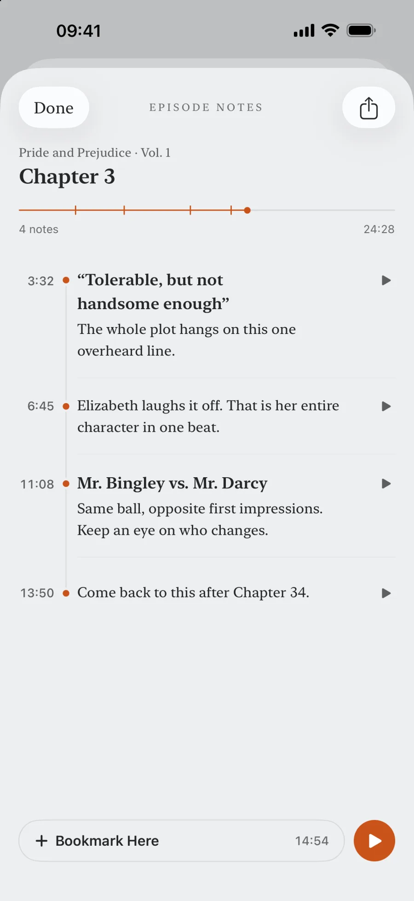
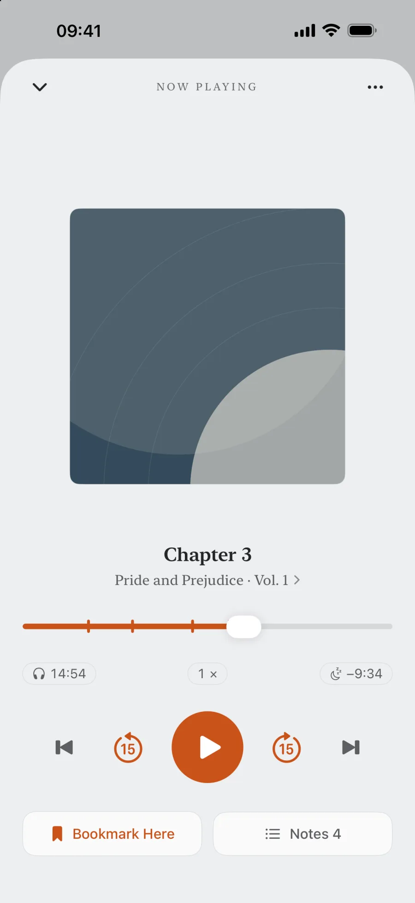
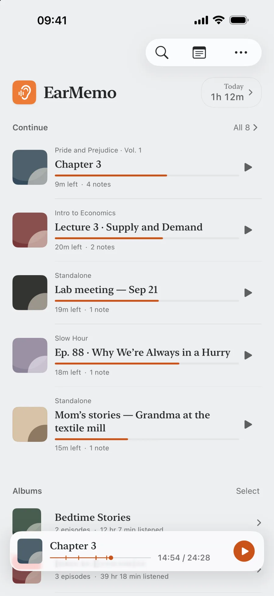
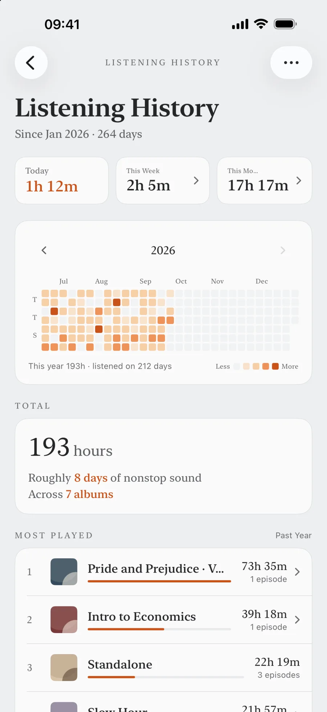
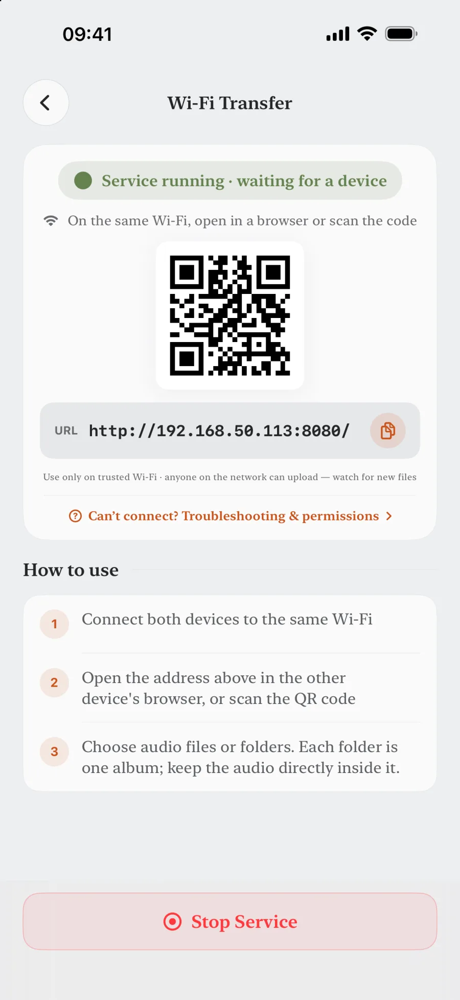

Listen to what you already own.
A local-first iOS player for podcasts, audiobooks, lectures, and voice recordings. Nothing leaves your phone — no network, no account, no tracking.
No subscription · One-time Pro unlock


Why EarMemo
Every other player fights for your attention.
EarMemo does the opposite.
No recommendation feed, no autoplay into the next episode, no list you can never finish. EarMemo keeps the long things you've downloaded — the ones nobody else organizes for you — quietly in one place. Stop on the sentence you want to keep; come back tomorrow, and you're still on it.
Your library
Everything you're listening to, in one place
One screen for the few things you're in the middle of. Each one remembers its progress and what's left — press it and you're back, no hunting, no "where was I?"
- Continue Listening resumes to the exact second
- Files group into albums you can browse and reorder
- A "today's listening" figure right at the top

Notes
Notes that jump back
Hear something worth keeping? Tap once and keep listening — write the line now or later. Every note is anchored to a timestamp marker — tap it later and you scrub straight back to that second. What you heard finally stays.
Press Mark while it plays. Tap a timestamp to jump back to it.
- Timestamped notes — one tap jumps to the line
- Grouped per album and episode, easy to review
- Export any time, into your own notes app
Listening history
See your whole year of listening
Today, this week, this year — EarMemo counts every minute you spend on long-form audio. Not to compete with anyone; just to turn "I feel like I'm always listening" into a number you can actually see.
- A yearly heatmap — a year of listening at a glance
- Daily, weekly, monthly + cumulative hours
- All on-device — never uploaded, never analyzed


Import
Get your files in, fast
Open a web address on your computer and drag audio straight into EarMemo over local Wi-Fi — no cable, no cloud. Or send files in from Messages, Mail, and Files with the iOS Share Sheet.
- Wi-Fi transfer from any browser — no cable or cloud
- Share Sheet from Messages, Mail, Files
- mp3 · m4a · flac · aac · wav, plus mp4 / mov audio-only
Everything else you'd want
Sleep timer
Live Activity countdown on the Dynamic Island and Lock Screen.
Background & Lock Screen
Full transport controls from Control Center and the Lock Screen.
Variable speed
Speed up or slow down without the audio turning to chipmunks.
Bookmarks
One-tap jump back to any saved point — essential for long content.
Share Sheet import
Send files in from Messages, Mail, Files, or any app with a share action.
Wide format support
mp3 · m4a · flac · aac · wav, plus mp4 / mov / m4v played audio-only.
Privacy
Private by architecture, not by promise
EarMemo never connects to a server. Settings, playback progress, notes, bookmarks, and statistics all stay on your device — and follow your own iCloud backup if you have iCloud enabled.
Read the full privacy policy →- No data collection
- No third-party SDKs
- No ads, no tracking
- No account, no sign-in
Pricing
Free to download. One-time purchase to unlock everything.
Download free and listen at your own pace: listen to 1 album at a time; try 10 audio tracks total across album episodes and standalone tracks; add unlimited timestamp markers and write on 5 of them. Every import and playback tool is included. When it fits, a single one-time purchase unlocks everything. No subscription, no ads.
FAQ
What is EarMemo?
EarMemo is a local-first audio player for iOS, designed for long-form listening: podcasts, audiobooks, lectures, and voice recordings. All of your data — settings, playback progress, bookmarks, notes, and listening statistics — stays on your device. EarMemo does not connect to any server and does not require an account.
Is EarMemo related to the AI study app with a similar name?
No. EarMemo is an offline audio player for iPhone and iPad, made by Fan YANG, for podcasts, audiobooks, lectures, and voice recordings you already own. It is a separate, unaffiliated product from any similarly named AI study, flashcard, or memorization service. EarMemo has no AI features, no account, and never connects to a server.
How is EarMemo different from Apple Podcasts or Spotify?
EarMemo plays local audio files you already own — podcasts you've downloaded, audiobooks, lecture recordings, voice memos. It does not stream from a catalog, does not have a subscription, and does not require an account. It is designed for people who want one focused tool for long-form listening from files they control.
Does EarMemo work offline?
Yes. EarMemo is local-first: it never connects to any server. All playback, statistics, and notes work without an internet connection. The app functions identically in airplane mode.
Which audio and video formats does EarMemo support?
EarMemo supports common audio formats including mp3, m4a, m4b (the standard audiobook container), aac, flac, and wav. Video files (mp4, mov, m4v) are played audio-only, so you can listen to the soundtrack of a video without watching it. DRM-protected purchases from Apple Books or Audible cannot be imported.
Does EarMemo collect any data?
No. EarMemo does not collect any user data. There are no third-party SDKs, no analytics, no advertising, and no tracking. All data stays on your device and follows your own iCloud backup if you have iCloud enabled.
Does EarMemo work on iPad?
Yes. EarMemo is a universal iOS app that runs on both iPhone and iPad, with a split-view layout adapted for the larger iPad screen.
Can EarMemo import files from other apps?
Yes. EarMemo integrates with the iOS Share Sheet, so you can send audio or video files into EarMemo from Messages, Mail, Files, or any app that exposes a share action for media files.
Is the free version a trial?
The free allowance never expires: listen to 1 album at a time; try 10 audio tracks total across album episodes and standalone tracks; add unlimited timestamp markers and write on 5 of them. Every import and playback tool remains available. Anything beyond the quota stays visible and deletable — it is only locked for playback until a one-time purchase of EarMemo Pro unlocks it.
I bought EarMemo when it was a paid download. Do I pay again?
No. Update to the latest version and EarMemo Pro unlocks automatically — no action needed, no second payment.
Your library, finally in one focused player.
Further reading
- Remember what you hear in audiobooksMark the moment, keep listening, add your own words later — without turning a book into homework.
- Play M4B and MP3 audiobooks you already ownWhich files are playable, four ways to get them on the phone, and where another player suits you better.
- Take timestamped notes, export as MarkdownNotes anchored to the exact second, and how this differs from transcription apps.
- Transfer audio to iPhone without iTunesWi-Fi browser transfer, the Files app, the Share Sheet — and when to use which.
- No account, no server, no trackingWhat local-first means here, and three ways to verify it yourself.